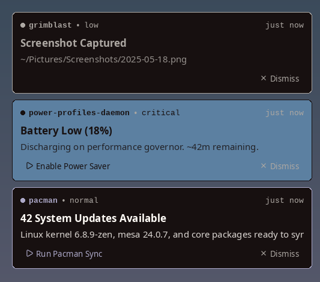

Your build is ready.
All done. Back to the good stuff.
Notifications that feel at home on your desktop. A small X11 daemon with native D-Bus, folding cards, and your palette.
MIT licensed · C11 · X11 · configured in C
All done. Back to the good stuff.
Battery at 18%. A good time to plug in.
42 packages ready to update.
Interactive preview · no desktop permissions needed
Small by design
nod is a suckless-style notification daemon for X11. It implements the Desktop Notifications Specification 1.2 over D-Bus, so existing apps and notify-send work with it directly. Configure the behavior in C. Let your desktop supply the colors.
Cards fold into a tidy deck and unfold on hover. Keep reading at your pace: hovering pauses every timeout in the stack.
Animated entrances and exits. Dismiss with a button, right-click, mouse drag, or two-finger swipe toward the screen edge.
Show up to three action buttons. Open a message or snooze a reminder. Use the included nod-send CLI to wire actions into your own scripts.
XRandR follows the focused window across monitors. Choose any corner, adjust the card size and spacing, and set how many cards stay visible.
One nod.c and one config.h. Toggle card details, borders, dividers, buttons, folding, and motion. Rebuild for behavior changes; reload colors live.
CUI cards with SDL3 GPU rendering, FreeType, HarfBuzz, and bidi text. Fontconfig fonts, rounded corners, and real transparency with a compositor.
Your palette, already here
nod reads your X resources, including wallpaper palettes from pywal and wallust. Colors and fonts reload while it's running. Per-urgency accents and a contrast safety net keep the important bits readable.
Make it yours ↗Same small card. Your own colors.
Illustrative palettes · no restart required
# One command. A little quiet. $ nod-dnd on on # Back when you're ready. $ nod-dnd off off # Or let your schedule take over. { 22, 0, 7, 30 } /* 22:00 → 07:30 */
Make room for focus
Set a weekly do-not-disturb schedule, including overnight hours. Toggle it from an X11 system tray or nod-dnd. Mute specific apps by name, all the time.
DND discards new notifications, including critical ones. Existing cards stay on screen. There is no hidden backlog waiting for you.
Set your quiet hours ↗From the actual app
The real nod, using a desktop palette. App name, urgency, relative time, summary, body, and actions—all at a glance.
Screenshot from the repository ↗

A small addition to your setup
For Linux desktops running X11. Install the system libraries, build nod, and start it before your window manager. The first build fetches its pinned CUI dependency.
Read the install guide ↗git clone https://github.com/mattmezza/nod.git
cd nod
make
sudo make install
# In your X11 session
nod &
notify-send "Hello" "A little nod."A few things to know
Yes. nod is free and open source under the MIT license. Build it, customize it, and use it on your own desktop.
nod implements the Desktop Notifications Specification 1.2 over native D-Bus. Apps that send standard desktop notifications and notify-send can use it directly. Stop any other notification daemon first: only one can own the D-Bus notification service.
nod targets X11. It does not support Wayland. It uses XRandR for monitor selection, X resources for themes, and an optional XEmbed system tray icon.
Behavior is configured in config.h and compiled into nod. Colors and fonts can reload live from X resources, polled every two seconds by default or refreshed with SIGUSR1. Do-not-disturb can be toggled at runtime.
Icons, markup, sounds, notification history, and focus stealing. There is no runtime configuration file and the daemon's only CLI flag is -v. nod is for a small, source-configured X11 setup.
Leave a little more room for your work